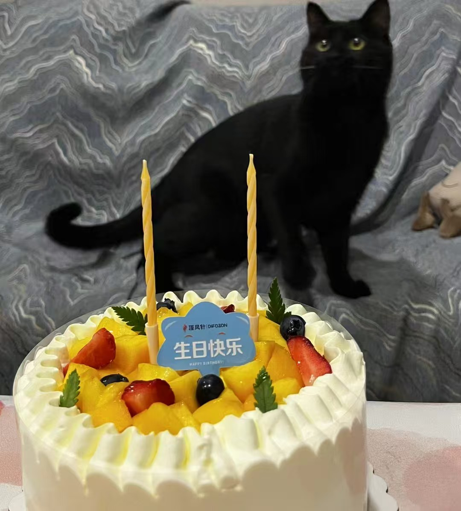
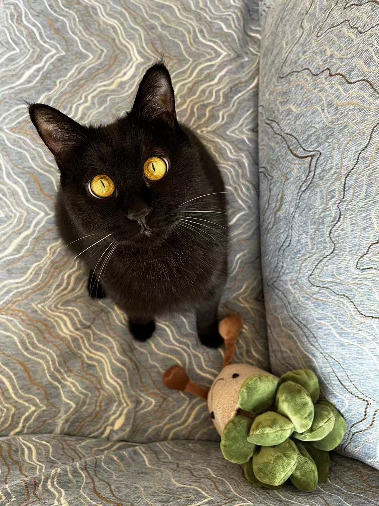
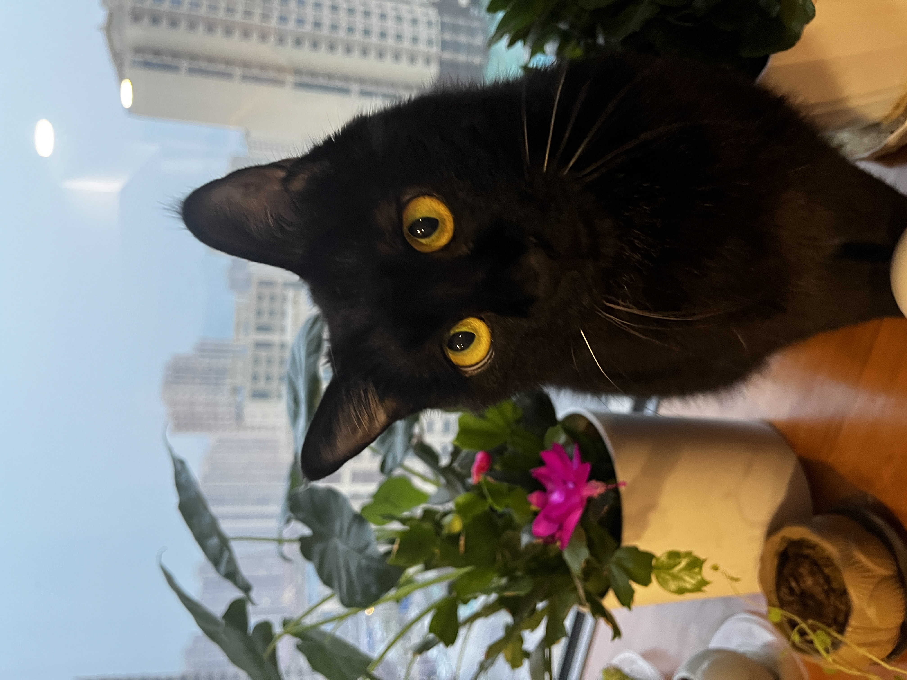
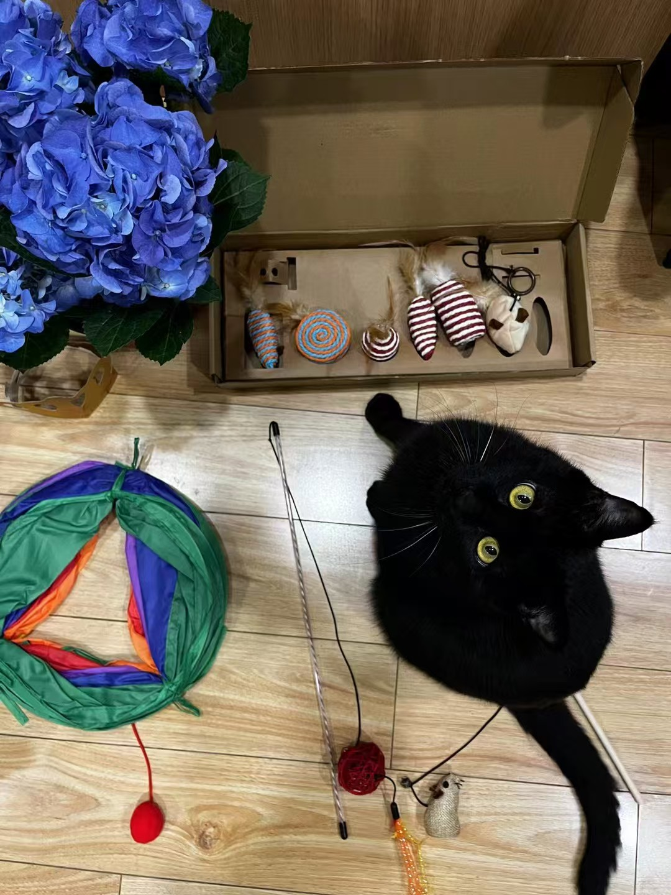
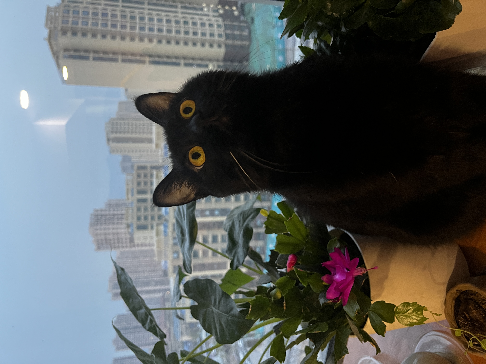

愿望一
愿你永远有一扇喜欢的窗，能看见风、云和回家的脚步。
2023 Window Journal
二岁的黑茶开始拥有自己的固定观察位。阳光经过窗格落下来，他坐在里面，像一本慢慢翻页的杂志。
这一页的节奏更轻，适合收纳日光、侧脸、饭后巡视和窗边发呆。

Sunlit Index
这一年不急着热闹，光线、影子和黑茶的坐姿就是主要叙事。




Letter
愿你永远有一扇喜欢的窗，能看见风、云和回家的脚步。
愿所有晒到你身上的光，都被你慢慢收进口袋。